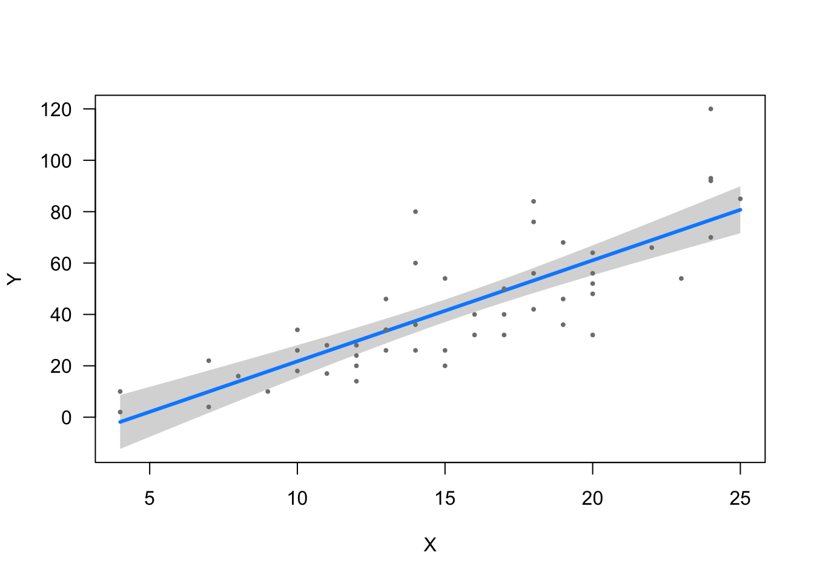
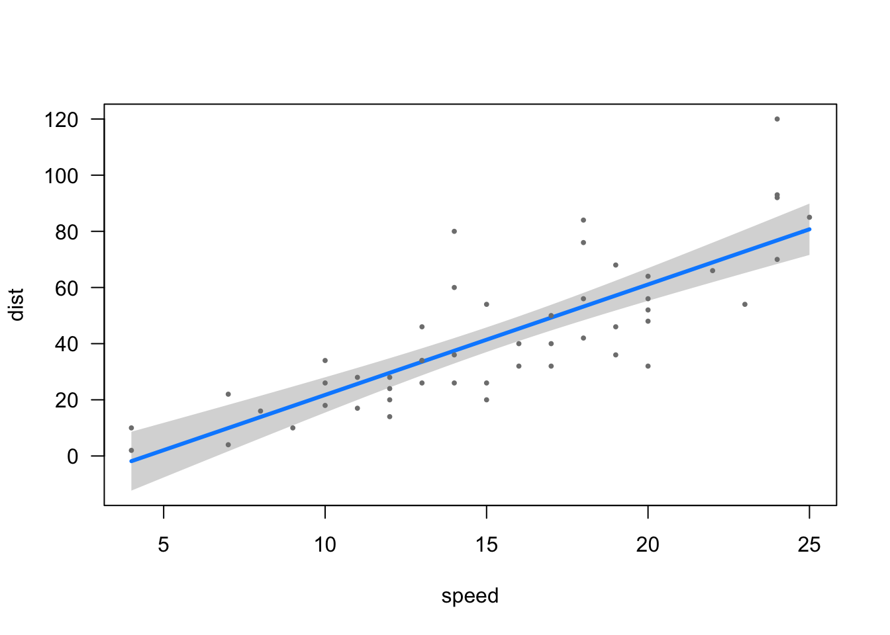

Linear Regression
An ordinary least squares(OLS) regression is a statistical method used for evaluating the relationship between two continuous dependent(outcome) and independent(predictor) variables.
To explain how this works as simply as possible, a linear regression line is the line that fits best through observed points that are plotted on a graph. “Best Fit” in an OLS regression model is defined as the line which produces the smallest value when you take the sum of the squared distances between the estimation line and the observed points. The idea is that if you need to estimate a Y value that corresponds with a particular X value, the regression line would give you a safe theoretical base for estimation.
Below is a scatterplot of observed values, and a regression line of estimated values.

That is the line which produces the smallest value when you take the sum the squared distances between the line & each observed point (residuals).
Example
Load the packages we will use in this analysis.
library(ggplot2)
library(magrittr)
library(knitr)
library(gvlma)
library(visreg)Load Dataset
We will load the cars dataset to run a simple linear regression. It contains two variables:
Speed = Speed (in mph)
Dist = Stopping Distance (in feet)
data(cars) #Load cars dataset.
kable(cars[1:5, ]) #Print first 5 rows of data.| speed | dist |
|---|---|
| 4 | 2 |
| 4 | 10 |
| 7 | 4 |
| 7 | 22 |
| 8 | 16 |
Preliminary Investigation of Data
This is a scatterplot of the speed & stopping distance values for each observation. The relationship appears to show some linearity. That is to say, it appears that as speed increases, stopping distance increases
plot(dist ~ speed, data = cars)
Linear Regression
Let’s use a linear regression model to see how effectively speed (IV) estimates stopping distance (DV).
First, we define the model and it’s parameters.
# model <- lm(DV ~ IV, data=data)
carslm <- lm(dist ~ speed, data = cars)Second, we view the regression output.
summary(carslm)
Call:
lm(formula = dist ~ speed, data = cars)
Residuals:
Min 1Q Median 3Q Max
-29.069 -9.525 -2.272 9.215 43.201
Coefficients:
Estimate Std. Error t value Pr(>|t|)
(Intercept) -17.5791 6.7584 -2.601 0.0123 *
speed 3.9324 0.4155 9.464 1.49e-12 ***
---
Signif. codes: 0 '***' 0.001 '**' 0.01 '*' 0.05 '.' 0.1 ' ' 1
Residual standard error: 15.38 on 48 degrees of freedom
Multiple R-squared: 0.6511, Adjusted R-squared: 0.6438
F-statistic: 89.57 on 1 and 48 DF, p-value: 1.49e-12This is a visualization of the regression line (estimated values) among the scatter plot of the observed (actual) values.
library(visreg) #Load visreg package.
visreg(carslm) #Plot the regression model.
Reading the Regression Output
summary(carslm)
Call:
lm(formula = dist ~ speed, data = cars)
Residuals:
Min 1Q Median 3Q Max
-29.069 -9.525 -2.272 9.215 43.201
Coefficients:
Estimate Std. Error t value Pr(>|t|)
(Intercept) -17.5791 6.7584 -2.601 0.0123 *
speed 3.9324 0.4155 9.464 1.49e-12 ***
---
Signif. codes: 0 '***' 0.001 '**' 0.01 '*' 0.05 '.' 0.1 ' ' 1
Residual standard error: 15.38 on 48 degrees of freedom
Multiple R-squared: 0.6511, Adjusted R-squared: 0.6438
F-statistic: 89.57 on 1 and 48 DF, p-value: 1.49e-12Coeficients
These are the regression estimates and associated values. Note that the first line of coefficients represents the Intercept, where the regression line crosses the y-axis. subseqent lines represent slope of the regression line, denoting the change in the DV for every 1-unit increase of the IV.
Estimate = This is the estimated change in the dependent variable for every 1-unit change in the independent variable
Std. Error = Represents the standard error of the estimate, an indicator of how precise the predicted values are as compared to the observed values. Std. Error is calculated as follows:
- [square root of the [[sum of the squared deviations from the mean] divided by the [degrees of freedom (n-1) ]] divided by the square root of n.
- √( ∑ (m-i)2/n-1 ) / √n
t value = This value represents how effectively the model is predicting the outcome values, and is used to calculate the p-value. The t value is calculated as [Estimate] divided by [Standard Error]. The closer the t value is to zero (0), the less effective the model is at predicting the outcome.
Pr(>|t|) = The p-value represents the rate at which the observed relationship would appear if the null hypothesis were true. In other words, it represents the likelihood that the relationship that is apparent in the data is occuring due to chance alone. The smaller the p-value, the greater the significance of your findings and the lower the likelihood that the relationship is occuring due to chance.
Residuals
This section describes the residual values - the differences between the values predicted by the regression model, and the value observed in the data.
Min = The lowest residual value (Typically, the greatest under-prediction by the model).
Max = The highest residual value (Typically, the greatest over-prediction by the model).
1Q = This is the residual value which separates the lower 25% of residual values from upper 75%.
Median = This is the median residual value, which separates the lower 50% of residual values from the upper 50%.
3Q = This is the residual value which separates the lower 75% of residual values from upper 25%.
Assumptions
The following assumptions must be met in order to use a linear regression model for estimation.
There is a linear relationship between the variables. This assumption is violated if there is a correlation between X and Y that is caused by external variables which are omitted from the analysis (spurious relationships).
The residual values follow a normal distribution, and the mean of the residual values is approximately 0. Residual values = The differences between the observed values of the Dependent Variable (y) and the values predicted by the regression model(ŷ).*
There can be no multicolinearity, meaning that the independent variables must be independent from eachother. Also, the error of the mean cannot be explained by the independent variables.
There is no autocorrelation of the residuals, meaning that the current residual value is not dependent on a related previous value. Particularly important for time-series analysis.
There must be homoscedasticity, meaning that the error value is relatively consistent throughout the regression, and variance in the data does not increase/decrease as X increases.
Testing Assumptions
We can use the gvlma() function to test the assumptions of the linear regression.
gvlma(carslm)
Call:
lm(formula = dist ~ speed, data = cars)
Coefficients:
(Intercept) speed
-17.579 3.932
ASSESSMENT OF THE LINEAR MODEL ASSUMPTIONS
USING THE GLOBAL TEST ON 4 DEGREES-OF-FREEDOM:
Level of Significance = 0.05
Call:
gvlma(x = carslm)
Value p-value Decision
Global Stat 15.801 0.003298 Assumptions NOT satisfied!
Skewness 6.528 0.010621 Assumptions NOT satisfied!
Kurtosis 1.661 0.197449 Assumptions acceptable.
Link Function 2.329 0.126998 Assumptions acceptable.
Heteroscedasticity 5.283 0.021530 Assumptions NOT satisfied!We should run a diagnostic plot to assess the model.
The Q-Q plot below plots the quantiles of the first dataset (observed) against the quantiles of the second dataset (estimated), and helps us determine if the two samples have a common distribution. Below, we can see that there are some outliers in the observed dataset (23, 35, 49). We should remove outliers and rebuild the regression model.
plot(carslm)


Removing the 3 outliers corrects our model, and all assumptions are accepted.
carslm2 <- lm(dist ~ speed, data = cars[-c(23, 35, 49), ])
gvlma(carslm2) #Test assumptions linear regression. All Good!
Call:
lm(formula = dist ~ speed, data = cars[-c(23, 35, 49), ])
Coefficients:
(Intercept) speed
-15.137 3.608
ASSESSMENT OF THE LINEAR MODEL ASSUMPTIONS
USING THE GLOBAL TEST ON 4 DEGREES-OF-FREEDOM:
Level of Significance = 0.05
Call:
gvlma(x = carslm2)
Value p-value Decision
Global Stat 7.5910 0.10776 Assumptions acceptable.
Skewness 0.8129 0.36725 Assumptions acceptable.
Kurtosis 0.2210 0.63831 Assumptions acceptable.
Link Function 3.2239 0.07257 Assumptions acceptable.
Heteroscedasticity 3.3332 0.06789 Assumptions acceptable.We can also visually test the assumption of normally distributed residuals manually by using the resid() function to access the residuals from our model, and plotting them in a histogram.
kable(resid(carslm)[1:5]) #Print first 5 residual values| 3.849460 |
| 11.849460 |
| -5.947766 |
| 12.052234 |
| 2.119825 |
ggplot(data = cars) + geom_histogram(aes(x = resid(carslm))) #Plot histogram of residual values.
Questions & Feedback
Please feel free to leave feedback that could help improve this site. If you have questions, please leave them below as well and I will do my best to reply you as soon as possible.